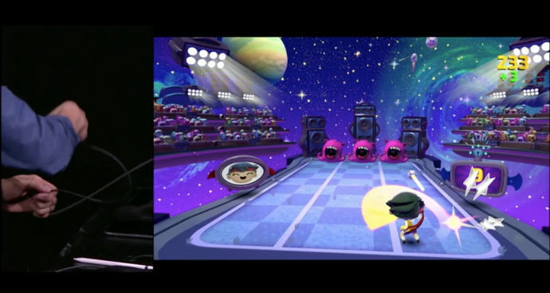

Whats apple bringing on apple TV?
Tim Cook took over the stage and said,”I’d like to talk about an even bigger screen.” And you held your breath because you know what’s coming next. Yes, tech-freaks all over the world, it’s time for the Apple
The TV is built on a powerful hardware that runs a modern operating system. It is further equipped with a completely revamped user experience, even better developer tools, and an App Store, of course. The TV introduces TV OS -a new OS especially for the TV. If this wasn’t enough, the remote has a touchpad! On the flip side, since the surface is absolutely smooth, it would be interesting to use it in the dark or without looking at it. A similar feature has been tried by Fan TV in the past.
The remote is equipped with Siri allowing the user to use their voice to look for movies and TV shows. A little Back to the Future reminiscing, anyone? Hulu, HBO and Netflix are all re-done. Plus, the TV is capable of following specific instructions like, “Show that Modern Family episode with Edward” and voila! There’s Edward Norton in Modern Family for you.

Apple TV gaming
Apple TV also boasts of new games with the remote serving as the game controller. Disney Infinity, the new Guitar Hero and Shadowmatic are some of the games that are included, along with Kids games. As for the UI, it seems more focused on content rather than channels and networks. While the user can fast-forward by sliding the thumb, they can also rewind 15 seconds by asking “what did she say?”. The user can also ask for sports scores and weather updates while watching TV shows.
Apple TV features the Apple-designed A8 chip so developers can build new games and custom content apps for the TV. tvOS supports key iOS technologies including Metal, for detailed graphics, complex visual effects and Game Center, to play and share games with friends.The original TV is priced at 69$ followed by 149$ and 199$ for the 32 GB and 64 GB versions respectively.